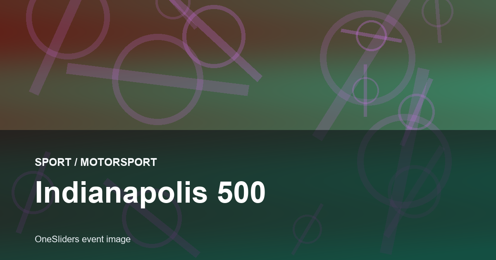
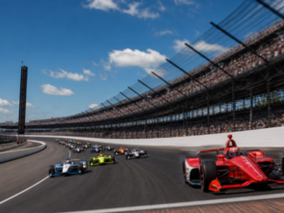

motorsport event guide
Indianapolis 500
A compact OneSliders guide to what the event is, how the current edition works and which stages matter most.

More motorsportInterested in more motorsport?Explore related events, places and calendar moments.
Indianapolis 500 is tracked here as an evergreen event, with the general guide separated from the selected edition.
The year slide holds selected-year practical details. The stages slide breaks the event into named parts that can be updated before and after the event.
Verified records should be added from the official organiser before replacing this placeholder.
- Selected edition: 24 May 2026.
- Host context:
 United States
United States  India.
India.
| Year | Winner | Team |
|---|---|---|
| 2025 | Alex Palou | Chip Ganassi Racing |
| 2024 | Josef Newgarden | Team Penske |
| 2023 | Josef Newgarden | Team Penske |
| 2022 | Marcus Ericsson | Chip Ganassi Racing |
| 2021 | Hélio Castroneves | Meyer Shank Racing |
Edition guide
Indianapolis 500 2026
Switch between recent editions without leaving the one-slider.
Countdown to the start of this edition.
Dates come from the OneSliders event index for this edition.
Ticket windows and resale rules can change.
The stages slide separates the event into planning-friendly parts.
Broadcast information is edition-specific.
The general event guide stays evergreen while this slide changes by edition.